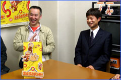
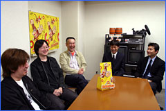
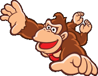
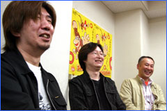
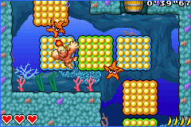
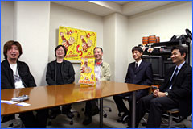
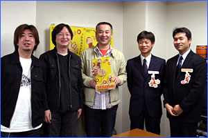
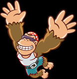

『ぶらぶらドンキー』を手がけたのは、株式会社パオンの皆さん。開発拠点は東京にもありますが、今回の開発スタッフが揃う仙台開発部にお邪魔してきました。仙台といえば、サッカーや野球などで近年熱い注目を浴びる街。アットホームな開発現場での開発秘話をお楽しみに！
|
--まず、株式会社パオンについて教えて下さい。

金子：パオンは1999年に設立されました。仙台ではおもに携帯ゲーム機を中心に開発を進めています。任天堂さんとのおつき合いは、今回のゲームが初めてとなります。
伊豆野：パオンの社長さんが企画を何度も持ち込んで来られていたんですが、途中から金子さんが企画に参戦されまして、３つ目か４つ目の企画が『ぶらぶらドンキー』にあたるものでした。
--今回の企画はどういう所からスタートしたんでしょうか。
金子：企画スタッフと新しい操作のゲームが出来ないものかとアドバンスのＬボタン、Ｒボタンを触っている時に、ふとＬボタンを押すと左手で掴む、Ｒボタンを押すと右手で掴むというアイデアが浮かびました。その頃ブームだった、フリークライミングもやや意識しているかもしれません。そこに伊豆野さんが「ドンキーコングを載せたらどうでしょう」という提案をして下さいました。
伊豆野：企画書を見た時点で、これは面白そうだと思いまして。まずはＧＢＡ版のサンプル制作をお願いしたんですよね。最初はオリジナルキャラで制作してもらったんですが、私はこれを全世界に通用するものにしたかったんです。そこでドンキーコングなら行けるんじゃないかと踏んで、キャラクターを替えさせてもらったんですね。
--数あるキャラクターの中でドンキーコングを選ばれた理由は？
伊豆野：確かにそうですね。他にも色々なキャラクターで試していたんですが、そのうちに、これは足がぶらぶらしたら面白いのではないかと思ったんです。足をぶらぶらさせながら上に登るイメージにマッチするキャラクターということで、ドンキーコングがピッタリだったんですよ。宮本（任天堂・情報開発本部長）にもプレゼンテーションしてみたところ、ＯＫが出たので開発が本格的にスタートしました。
--このソフトの開発はいつからだったんでしょう。
伊豆野：２００３年夏くらいからですが、実はドンキーコングの絵をどうするかで、長いことかかったんです。絵をどういう表現にするかだけで半年とかかかってますね（笑）。

塚原：色々なポーズで試し、サンプルを作りました。これまでのドンキーは前屈っぽい姿勢のイメージなので、空中を飛ぶドンキー…というのがなかなかイメージできなく、固まるまでかなりの時間がかかりました。
佐野：３Ｄで表現されてきたドンキーのイメージって、ちょっと重そうじゃないですか。でも、これはその路線じゃなくて、“ぶらぶら”に適した絵で行きましょうと。そうするにはどうしたらいいか、という部分ですね。
--“ぶらぶら”は新しい要素だけに、そこで手こずったんですね。
塚原：ドンキーコングってネクタイをしてますよね。これを独立して“ぶらぶら”させたいと任天堂さんからご要望がありまして、プログラマーには苦労をかけました。見た目はそう感じないかもしれませんが、処理的には相当難しいことだったんですよ。チラチラとしか見えない部分ですが、ここは本当に頑張ってもらいました。
佐野：他にも「３Ｄでは描かれなかった、鼻の穴を見せましょう！」とか（笑）。
塚原：というわけで、２Ｄのデザイン作りに３ヶ月ほどかかってしまいました。
--ドンキーコングは任天堂の誇る看板息子ですから、色々とこだわりというか、セオリーがあるんですね。

佐野：私は任天堂とパオンさんのパイプ役をやっていたのですが、やはりドンキーコングには長い歴史があるので、それぞれの方にいろんなイメージがありました。その辺りのチェックで色々と苦労しました。今回は「ドンキーコングは暖かいイメージで、ちょっとのんびりした感じ」ということで、見た目の印象を変更してもらったりしました。ただ、塚原さんは仕事の速い方なので、そこは本当に助かりました。
塚原：こちらとしては、細かい部分まで指示を出して下さったので、やりやすかったというのがあります。指の関節がちゃんとわかるように、というような指示をいただきました（笑）。
伊豆野：ゲームデザインから新しいものだったので苦労したんですが、パオンさんはもちろん、社内のデザインスタッフも頑張ってくれて、良いイラスト素材が出来上がりました。
|
--このゲームの売りは、やはり”ぶらぶら”ですか。
金子：そうですね。掴んで、ＬＲで回って、ジャンプ。これはボタン操作そのものがダイレクトにキャラクターの動きと連動しているので、ここが他にない要素だと思います。「キャラを動かしている」というよりも「自分がやっている」という感覚がかなりあると思いますよ。
--私はプレイしていて、ゲームキューブでも行けるような気がしていたんですが。
金子：実は途中まで、ゲームキューブで…と想定していたんですが、途中からターゲットをＧＢＡへ変更しました。なにが面白いのか、なにが出来て、なにが出来ないのか…というようなことを考えていった結果ですね。
--ゲーム全体で気をつけた点は、どういった部分ですか？
金子：やはり新しいタイプのアクションですから、遊んでいて疲れないことですね。それとパッと見てプレイのコツが掴めるようにすること。ここはかなり気を遣いました。ギミックもありますし、動きも従来のゲームとは違いますが、それがストレスになっては困りますので。
伊豆野：任天堂としては『新しい操作感』を活かすということですね。ここを追求していきたかったというのがあります。
嶺岸：プログラム側から見ると、当初想定していたものよりもどんどん大変になっていきました。後から追加されていく部分が多くなっていくのは当たり前なんですが、やはり処理が厳しくなっていく。新しいものを入れると処理が重くなる、でも入れなくては…というジレンマがあって。
金子：ドンキーの動きが回転ですよね。回転するキャラクターが多くなると処理落ちするんですよ。そこに加えてネクタイを揺らす、更に処理が重くなる（笑）。

--イタチごっこですね（笑）。
嶺岸：アイディアを入れ込むことと処理とのバランスを取るのにかなり大変でしたが、それだけにやりがいもありました。最後は力任せで詰め込みました。
--収まったんですか？
嶺岸：ダンボール箱のフタを、無理無理テープで留めてるような状態です。ちょっとの刺激でバーン！ と弾け飛びそうな（笑）。
伊豆野：話していくうちに「ステージにもっと仕掛けが沢山欲しいね」なんて言っていて増やしたりしていました。
--そのほかに工夫したところは？
伊豆野：ゲームを一周クリアすると、“ディディーモード”というのが出現します。ディディーコングが主人公になってスタートするんですけれど、ディディーはジャンプ力があるのでその辺りが楽になります。

金子：ただし、バナナに制限がついたりして、回復しづらくなってますよ。
伊豆野：タイムアタックモードも出るので、ステージクリアのタイムを競うという遊び方もできるようになりますね。色々なルートを試したり、伸ばしたりできるというレース的な遊びになると思います。
--私がプレイしてみて感じたのは、サウンドのかっこよさでした。ちょっとクールというか、今風のテイスト溢れる音楽ですね。
金子：これは本社（東京）のサウンドクリエイターが作ってくれたものですね。サウンドのみ東京で作っていたのですが、それを聞いたら彼も喜びますよ。
|
--アクションゲームということで、攻略のコツなんかを聞かせてもらえると嬉しいんですが。
金子：慣れです（一同笑）。
伊豆野：トッテを掴んで移動するという作業も、慣れないうちはは１個ずつよいしょと行くんですが、慣れてくるとヒョイヒョイとテンポよくできるようになっていきます。あるポイントで「あっ」とやり方のコツを掴むと、遊び方が変わるんですね。最初はギューッと力を入れて遊ぶんですが、途中で力が抜けて遊べるようになるという。
--そういえば、最初はＬＲを押す指に無駄な力がかかっていたような。落ちないように必死だったのかと（笑）。

金子：強く押しても、その分トッテを掴む力が強くなるわけじゃないんですけどね（笑）。そこを抜けると、気楽に遊べるようになります。
佐野：対戦モードをやると、個人個人の力の入れ具合がよくわかって面白いですよ。あれはリズムよくボタンを弾いていくと速いんですが、力が入っていると明らかに遅い（笑）。
伊豆野：やはり初めてプレイすると指が疲れるだろうということで、最初に慣れてもらうための、ただ上へ上へと登っていくだけのステージを入れるなどの工夫をしてもらいました。それと、ビジュアル的な面で出した要望と言えば、ドンキーって茶色いですよね。これ、最初は顔を見せずに後ろ向きで動いてたんですよ。でも全身茶色だと味気ないし、顔も見えないとちょっと…ということで、顔も見えるようにしつつ、足もぶらぶらしまくる、というように作って頂きました。
 塚原：で、佐野さんからのご要望はネクタイだったわけです（笑）。
塚原：で、佐野さんからのご要望はネクタイだったわけです（笑）。
佐野：ええ、赤色が入ることがポイントです。
--開発さんから見たオススメのポイントなどはどの辺りでしょう。
塚原：やはり苦労した分、ネクタイですね。
嶺岸：登る楽しさを味わって欲しいというのと、あとはボス戦でしょうか。攻撃要素も入ってくるので、楽しめると思います。
金子：これはワンカートリッジでも対戦できるんですが、４人で４カートリッジで遊ぶこともできる。１本だと遊べるコースが少ないのですが、４本あればより多く楽しめます。１本買ってみんなで遊んでもいいし、それぞれが持ち寄ってもらっても楽しめるというのがオススメですね。
佐野：このソフトはとてもゲームバランスに優れていると思います。ここに手が届くかどうか、というすれすれの所で落ちたり。うまい配置になっていると思うので、ちょっと大変だと感じても、我慢して先を見ていって欲しいです。
伊豆野：先ほども言いましたが、『新しい操作感』の上に乗っているアクションゲームですから、今までに見たことのない仕掛けを楽しんで頂きたいですね。個人的には石投げのアクションが大好きなんで、本当は対戦でも石投げを入れたかったんですよね。私は必要ない所でもぼんぼん石を投げまくってます（笑）。

--では、最後にメッセージをお願いします。
伊豆野：3,800円という価格はとてもリーズナブルですので、骨までしゃぶり尽くして遊んで欲しいです。今後シリーズ化していきたいと思っていますし、ぜひともご期待下さい。
金子：親指だけの操作に飽きた方、人差し指を鍛えたいと思っている方にうってつけのソフトだと思いますので（笑）、楽しく遊んで下さいね。
--どうもありがとうございました！
|


 |
 |
|
|